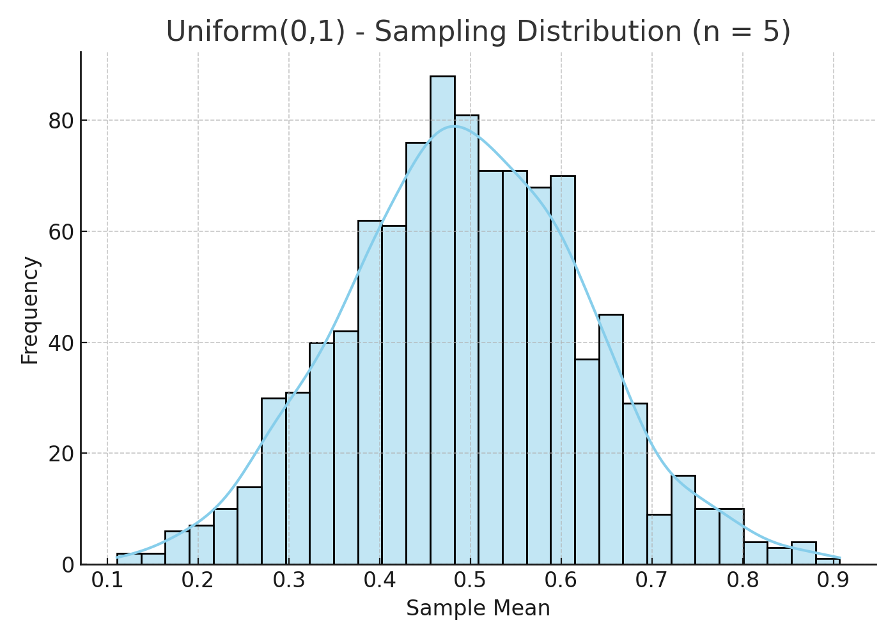
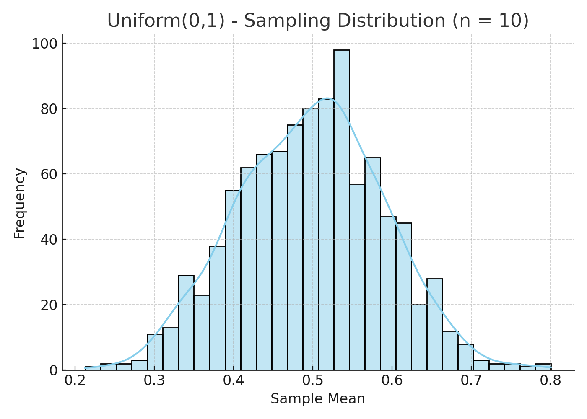
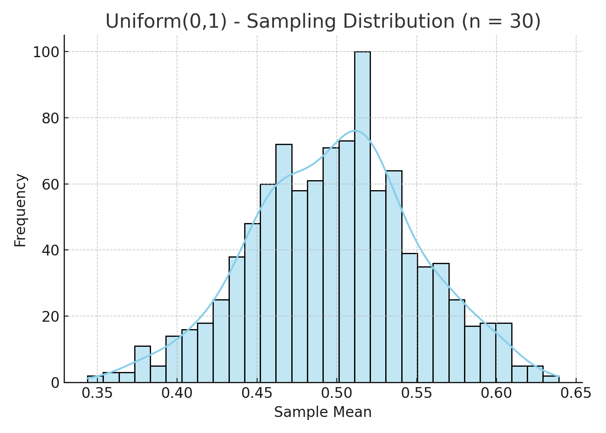
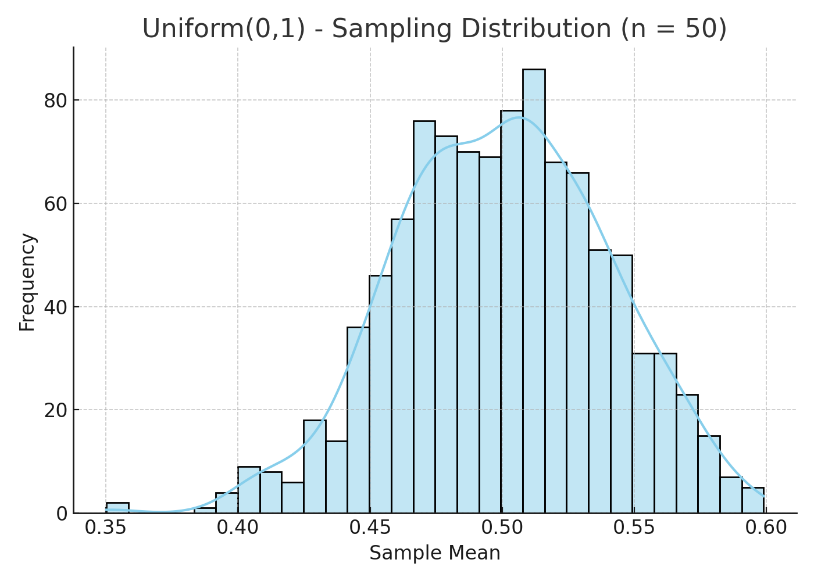
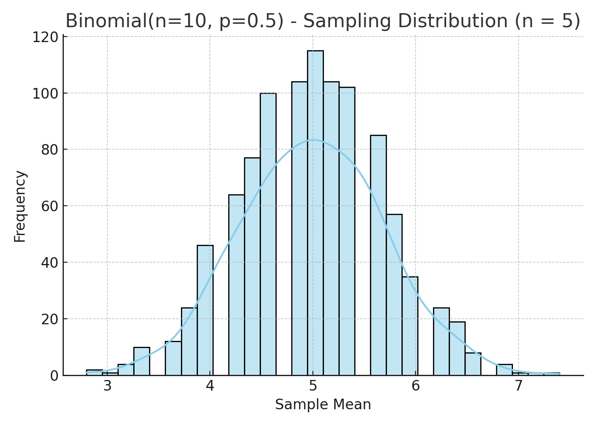
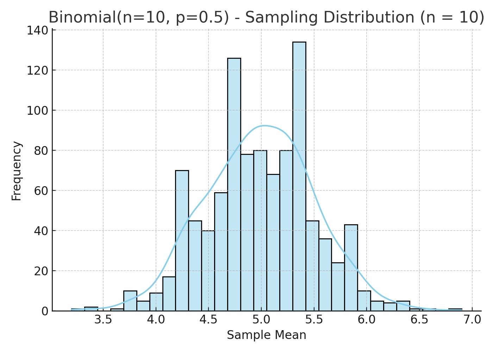
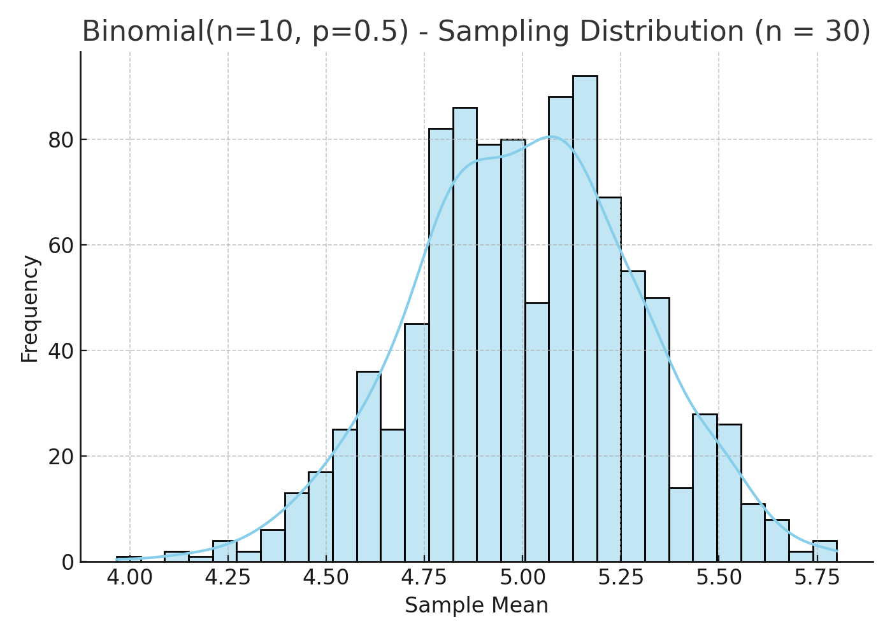
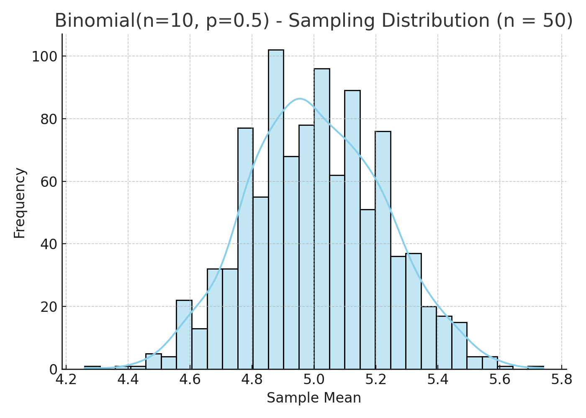
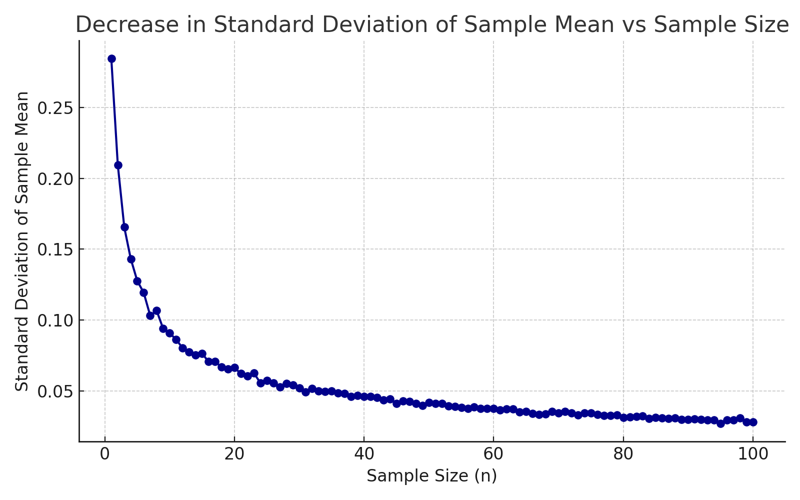

Problem 1
Statistics Problem 1
Exploring the Central Limit Theorem (CLT) Through Simulations
✅ 1. Motivation
The Central Limit Theorem (CLT) is one of the most important results in probability and statistics. It states:
Given a population with any distribution (with finite mean \(\mu\) and variance \(\sigma^2\)), the sampling distribution of the sample mean approaches a normal distribution as the sample size increases.
CLT has powerful implications: - It justifies using the normal distribution in inference, - Enables confidence intervals and hypothesis testing, - Supports statistical modeling across various disciplines.
This report demonstrates the CLT via simulations from different types of populations.
✅ 2. Key Definitions
- Population: The entire set of data values (e.g., all possible outcomes).
- Sample: A subset taken from the population.
- Sample mean (\(\bar{x}\)): The average value of a sample.
- Sampling distribution: The distribution of a statistic (like \(\bar{x}\)) over many samples.
- CLT: As sample size \(n \to \infty\), the distribution of \(\bar{x}\) approaches normality.
✅ 3. Simulation Plan
For each population distribution: 1. Generate a large population (e.g., 100,000 values). 2. Select sample sizes \(n = 5,\ 10,\ 30,\ 50\). 3. Draw repeated random samples from the population. 4. Compute sample means for each iteration. 5. Plot histograms to observe convergence toward a normal shape.
Distributions tested: - Uniform \((0, 1)\) - Exponential \((\lambda=1)\) - Binomial \((n=10,\ p=0.5)\)
✅ 4. Population Distribution: Uniform(0,1)
🎯 Description:
- Flat distribution from 0 to 1.
- Mean: \(\mu = 0.5\)
- Variance: \(\sigma^2 = \frac{1}{12}\)




🧠 Observation:
As \(n\) increases, histograms become more bell-shaped, approximating a normal distribution.
✅ 5. Population Distribution: Exponential(λ=1)
🎯 Description:
- Skewed distribution, mean = 1
- Heavy tail


🧠 Observation:
Convergence is slower due to high skewness, but normality is still visible as \(n\) grows.
✅ 6. Population Distribution: Binomial(n=10, p=0.5)
🎯 Description:
- Discrete, symmetric shape (similar to normal)
- Mean = \(np = 5\)




🧠 Observation:
Faster convergence due to population already being close to normal.
✅ 7. Parameter Exploration
🔍 Influence of:
- Sample size (\(n\)): Larger \(n\) = better approximation to normal
- Population shape: More skewed → slower convergence
- Variance: Affects spread (standard error \(\propto \frac{\sigma}{\sqrt{n}}\))

✅ 8. Real-World Applications of CLT
- Estimating population parameters (e.g., average income, exam scores)
- Manufacturing: Sample testing and quality control
- Finance: Risk estimation using historical return sampling
- Epidemiology: Predicting disease metrics using population sampling
CLT enables use of normal-based confidence intervals and p-values in all these fields.
✅ 9. Conclusion
The Central Limit Theorem holds for all tested distributions:
- ✅ Even when populations are non-normal or skewed
- ✅ Larger samples produce normal-like sampling distributions
- ✅ Convergence is faster when population is less skewed
CLT allows us to use powerful statistical tools regardless of the underlying population.